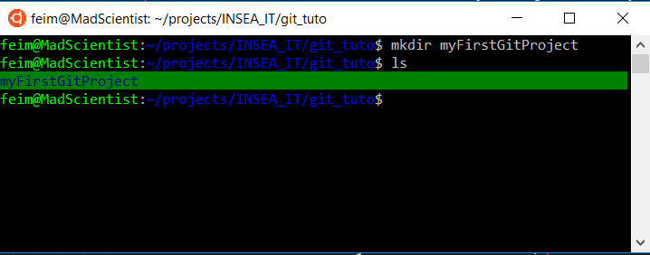
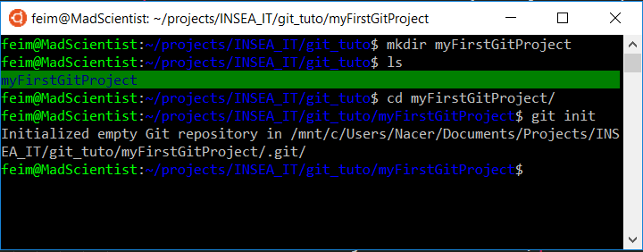
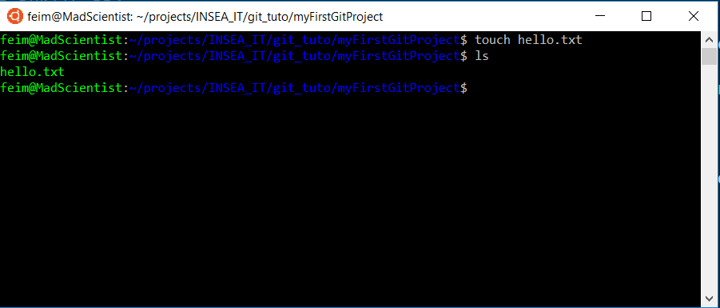
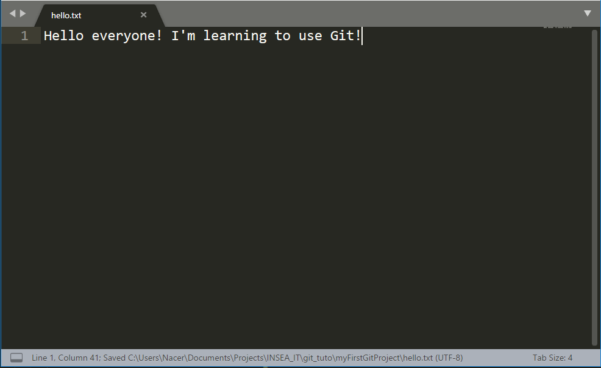
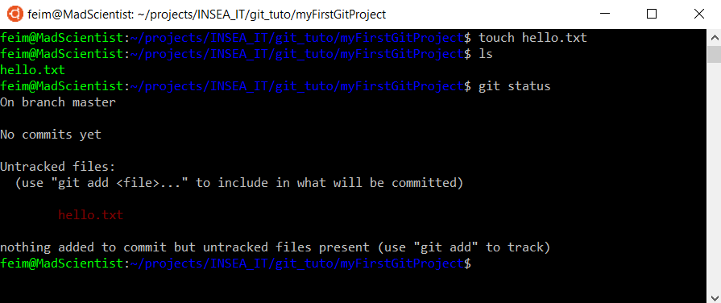
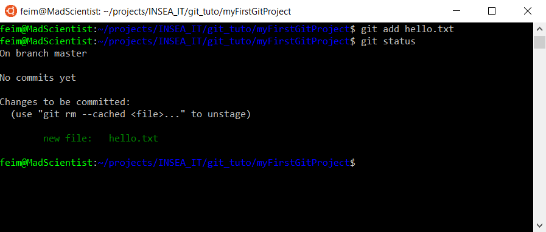
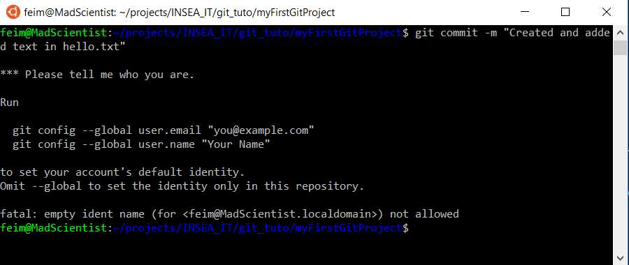
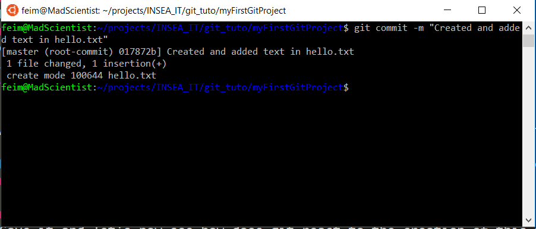

Maybe you are getting lost with all your current projects, or maybe you just can't remember details of a code you wrote a month ago.
Also, you may want to work on some projects with some colleagues, but it's complete disorder.
Using git can be a solution to your problems!
What is git?
Git is a version control system, it helps to keep a track on all modifications that are done in a repository. Created by Linus Torvalds in 2005, this tool is a great help for managing your own project, but also for working with other fellow programmers on the web.
If you're interested in more details, I strongly advise that you check out the Openclassrooms class about Git & GitHub.
Git installation
If you use Linux, remember the first paragraph, it's Linus that created git, so there's already basic Git tools on your machines.
I suggest you check the official installation guide for git.
Explaining basic git tools
Now that you have git on your computer, open a terminal (Git has his own bash for windows)
1- Initializing a git repository
Create a new repository
mkdir myFirstGitProject
Now we have to define it as a git repository
cd myFirstGitProject #Go to the repositorygit init

2- Git Commit
A commit is used to save the advenced of the project at a certain state. All the commits are saved and can be consulted anytime.
Before commiting, let's make some changes to our repository. Let's create a file
touch hello.txt
Let's open the file in a text editor and write some text
Hello everyone! I'm learning to use Git!
Save it and let's now see how does git react to the creation of this file. Let's type
git status
Now you can see all the files that have been modified and created in the project since the last commit. But as you see, the red color indicates that the files are not added in the commit list, and even some are untracked.
First let's add untracked files using the following command
git add hello.txt
As you can see, the file is now added to the commit list and has turned green
It's finally time that you make your first commit, but don't be in a hurry about it or you'll end up with a message like that one.
Indeed, you have to set a username and an email to identify yourself in the commits, so let's configure it right now. I suggest you use the same username and email that you'll use for your GitHub account so you won't have multiple usernames when doing commits, but it's not an absolute necessity.
git config --global user.email "you@example.com"git config --global user.name "Your name"
There comes the long awaited command to commit
git commit -m "Your commit message that describes the changes"
Some tips :
- You can add all the files of your project using git add -A
- If all the files you want to make a commit on are tracked (run git status to know if you have untracked files), you can skip adding all the files with the git add command using git commit -am "Commit message"
- To see the list of all the commits use git log